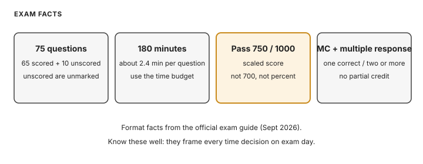

Outer layer Claim
Start here
Verified exam identity (September 2026). This guide targets one exam only: the AWS Certified Generative AI Developer – Professional (AIP-C01).

Exam facts to memorize: 75 questions, 180 minutes, pass at 750 out of 1000, MC and multiple response with no partial credit. Source: original figure for the AWS AIP-C01 Study Guide.
- AIP-C01 exam facts: 75 questions, 180 minutes, pass at 750 out of 1000, multiple choice and multiple response with no partial credit
Mechanism
Exam prep · AIP-C01
Verified exam identity (September 2026). This guide targets one exam only: the AWS Certified Generative AI Developer – Professional (AIP-C01). If your exam confirmation shows a different code, stop. This material is not for that exam.
| Format | 75 questions: 65 scored + 10 unscored (unscored are unmarked) |
|---|---|
| Time | 180 minutes (about 2.4 min per question) |
| Question types | Multiple choice: one correct answer. Multiple response: two or more correct answers, no partial credit. |
| Pass mark | 750 / 1000 scaled |
| Fee | $300 USD |
| Domains | D1 Foundation Model Integration, Data Management, and Compliance: 31%. D2 Implementation and Integration: 26%. D3 AI Safety, Security, and Governance: 20%. D4 Operational Efficiency and Optimization for GenAI Applications: 12%. D5 Testing, Validation, and Troubleshooting: 11%. |
| Who it is for | Professional level. AWS assumes 2+ years building on AWS plus about 1 year of hands-on generative AI work. |
Last verified against the official AWS exam guide and independent 2026 candidate sources: September 2026.
This is the complete study guide. It holds zero-to-one volumes for all five exam domains. It holds a 200-question bank with a 75-question mock exam. It holds a one-volume crash course and an end-to-end system design guide. It is built for a visual learner who studies 4+ hours a day. Every volume is self-contained and opens offline.
Numbers and limits
Volatile. Quotas, model IDs, and prices move. The prose below was checked against AWS documentation on 2026-09-28. Re-check any quota or price before exam day.
This is the complete study guide. It holds zero-to-one volumes for all five exam domains. It holds a 200-question bank with a 75-question mock exam.
Worked scenario
Work “Start here” against one stem. Name the constraint (freshness, citation, latency, a cost ceiling, or a control that must block) and pick the smallest managed mechanism that meets every constraint.
Exam trap
Exam trap: a real service used for the wrong job, or a heavier ladder rung than the stem requires. Match the verb in the stem — cite, act, block, cheapen, or measure — to one mechanism here.